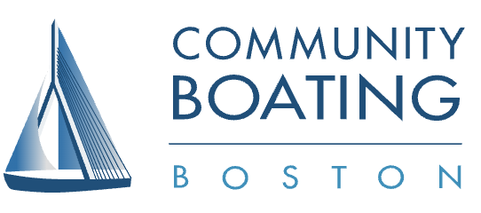
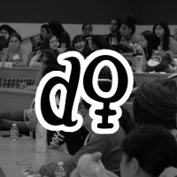

EXPERIENCE
| TITLE | DESCRIPTION | DATE |
|---|---|---|
| Software Engineering @Community Boating Boston  |
• Increased boat sign-out efficiency time by 50% by implementing a new algorithm. • Developed C++ algorithms and taught students how to build remotely-operated submersibles that complete various tasks in the Charles River in collaboration with MIT Robotics. • Currently working on implementing machine learning in the system to improve sailing experience for members. |
Jun 2022 - Present |
Systems Engineering @Harvard University |
• Used Bash, Linux/UNIX to implement department-specific hardware, systems, and application software for the Math Department. • Collaborated with team members to implement system security measures to protect data, software, and hardware. |
Sep 2022 - Sep 2023 |
| Sailing Instructor @Community Boating Boston |
• Taught Club members how to sail the Cape Cod Mercuries on the Charles River. | Jun 2022 - Present; Seasonal |
| Founder & Director @InteGirls Boston  |
• Founded and ran the Boston chapter of the nonprofit organization that promotes STEM and competition math involvement for female and non-binary students. • Hosted a national virtual competition in late 2020, which had over 500 participants nationwide. |
Aug 2020 - Aug 2022 |
| Team Leader @PPE for Healthcare (Andover, MA) | • Mass-produced 3000+ 3D-printed face shields for healthcare/frontline workers, nonprofit organizations, and businesses internationally. • Conducted extensive research with team to find the ideal PPE prototype for protection, comfortability, and durability. • Honored by national, state and regional level media coverage(The Boston Globe, CBS, NBC, etc.). |
Apr 2022 - May 2021 |